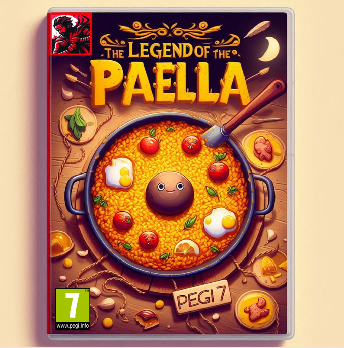

| The Legend of Paella |  |
DescripciónThe Legend of Paella es un videojuego de aventura y cocina que nos sumerge en una experiencia vibrante e inspirada en la cultura española. Los jugadores asumen el papel de un joven chef que recorre diversos pueblos, desafiando a cocineros locales y buscando ingredientes únicos para crear la paella perfecta. Con mecánicas que combinan exploración, resolución de acertijos y minijuegos de cocina, este título ofrece una mezcla fresca de aventura y simulación culinaria. |
| Spaguetti Mafia |  |
DescripciónSpaghetti Mafia es un videojuego de acción y estrategia ambientado en una versión estilizada y humorística de la Italia de la década de 1950. Los jugadores asumen el rol de un joven mafioso que debe abrirse paso en el mundo del crimen organizado. Spaghetti Mafia permite a los jugadores gestionar negocios de dudosa reputación mientras preparan platos italianos clásicos para impresionar a los capos y sellar alianzas. |
| 1939 |  |
Descripción1939 es un intenso videojuego de guerra y estrategia que transporta a los jugadores al comienzo de la Segunda Guerra Mundial, ofreciendo una experiencia de combate realista y envolvente. En este título, los jugadores pueden ponerse en la piel de soldados y comandantes de distintas naciones mientras participan en batallas clave, desde invasiones relámpago hasta desesperadas defensas. Con un sistema de estrategia en tiempo real que permite planificar movimientos y coordinar ataques, 1939 se destaca por su atención al detalle histórico y sus escenarios auténticos. |
| Churimbel |  |
DescripciónChurmibel es un emocionante juego de carreras que trae velocidad, caos y diversión en cada circuito. Los jugadores asumen el rol de Churmibel, un piloto carismático y sus amigos, cada uno con habilidades y vehículos únicos. El juego presenta pistas vibrantes y llenas de obstáculos, potenciadores y atajos secretos, que garantizan una experiencia impredecible y trepidante. Al estilo de los clásicos de carreras de combate, Churmibel permite usar todo tipo de artilugios y trucos para adelantar a los oponentes o sacarlos de la pista, asegurando que cada carrera sea una batalla tan divertida como desafiante. |
| Creed of the Murders: The Hispanic Indies |  |
DescripciónEl Credo de los Asesinos: Las Indias Hispánicas es un juego retro de acción y aventura que lleva a los jugadores a la era colonial en América Latina, explorando el conflicto entre la Orden de los Asesinos y los Templarios en las Indias Hispánicas. En este título, los jugadores asumen el rol de un asesino local que navega por ciudades coloniales, junglas densas y ruinas antiguas, completando misiones de sigilo y combatiendo contra fuerzas opresoras. Con un estilo gráfico pixelado y ambientación retro que evoca los videojuegos clásicos de 16 bits, El Credo de los Asesinos se destaca por su estética única y su cuidado detalle histórico. La jugabilidad mezcla plataformas, combate y sigilo en niveles desafiantes, mientras el jugador destapa secretos, ayuda a comunidades indígenas y forma parte de eventos históricos. |
{kind=link}